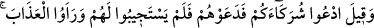
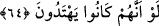
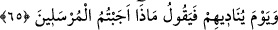
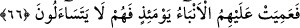
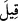
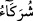

64. “(Allah’a koştuğunuz) ortaklarınızı çağırın!” denir, onlar da çağırırlar; fakat
kendilerine cevap vermezler ve (karşılarında) azâbı görürler. Ne olurdu (dünyada
iken) doğru yola girselerdi!
“(Allah’a koştuğunuz) ortaklarınızı çağırın!” denir, onlar da çağırırlar;”
“ (denir)” ifâdesinin tercih edilmesi, Allah’dan başkasına tapanlar için bir azar ve
tehdid mahiyeti taşır. Diyenler ise meleklerdir. Putlar v.s. ortaklarınızı çağırın; sizi
azaptan kurtarsınlar. “ (ortaklar)” kelimesinin “ (siz)” zamirine izafe edilmesinin
sebebi; onların, bu şeylerin Allah’ın ortakları olduğunu iddiâ etmeleridir.
“Onlar da” aşırı şaşkın bir halde, dünyada iken taptıkları bu şeyleri “çağırırlar;” ve
yalvarırlar; “fakat” cevap vermeye ve yardım yapmaya güçleri yetmediği için
“kendilerine cevap vermezler ve (karşılarında)” etraflarını çeviren “azâbı görürler.
Ne olurdu (dünyada iken) doğru yola girselerdi!” Yani, ne olurdu, herhangi bir şekilde
bu azâbı kendilerinden def edebilselerdi. Yahut dünyada iken hakka hidâyet için yol
bulup hidâyete erselerdi, bu azâbla şimdi karşılaşmazlardı.
Bazıları demiştir ki: Burada “” temennî edatıdır. Onlar bu anda, dalâlet ehlinden
değil, hidâyet ehlinden olmayı temenni ederler, demektir.
65. O gün Allah onları çağırarak: Peygamberlere ne cevap verdiniz? diyecektir.
Allah’ın, azarlayarak ve başa vurarak kâfirlere seslendiği o günki ahvâli hatırla:
Allah Teâlâ der ki: Siz, beni tevhid edip bana ibâdet etmeye çağırmak ve şirkten
uzaklaştırmak için gönderdiğim peygamberlerime ne cevap verdiniz?
66. İşte o gün onlara bütün haberler körleşmiştir (delilleri tükenmiş, söyleyecek
sözleri kalmamıştır); onlar birbirlerine de soramayacaklardır.